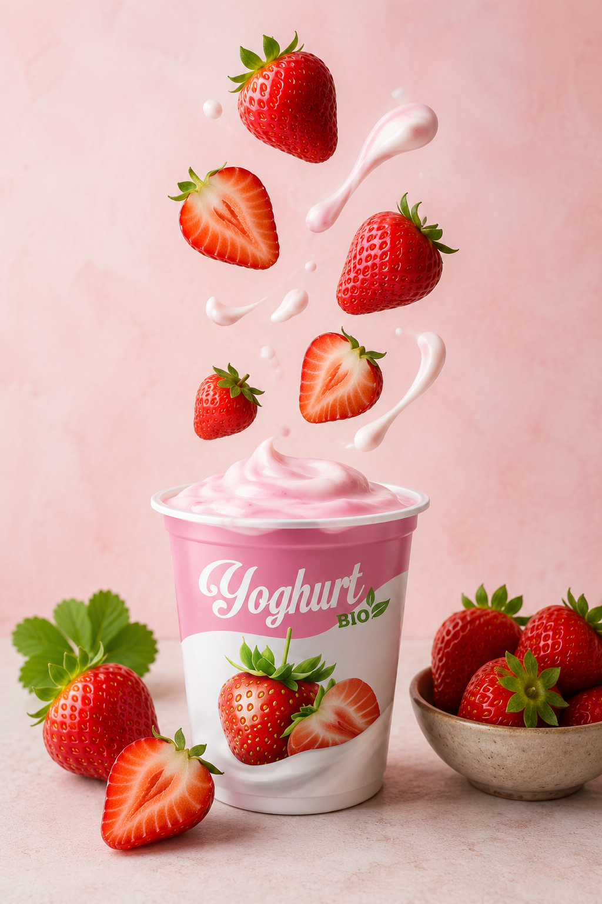
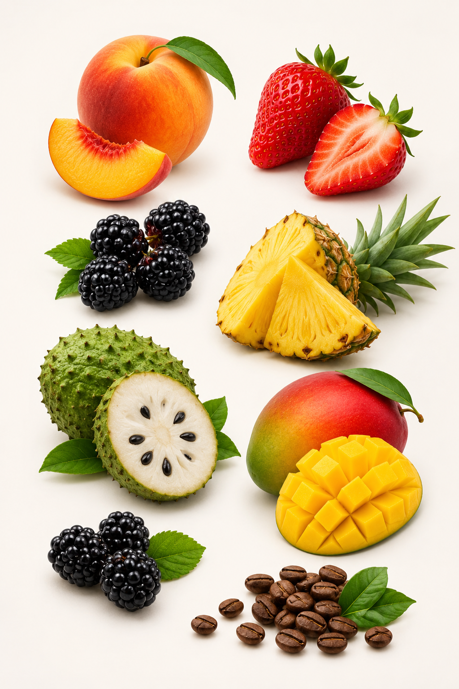

Elaborado a diario
Nuestros Yogures
Cada sabor hecho con leche fresca y cultivos vivos. Sin conservantes, sin compromiso.
Cargando la frescura del campo...
Desliza y abre la ficha de cada sabor para ver cómo se conserva y con qué disfrutarlo.
Yogurt natural, sin conservantes ni aditivos innecesarios.
Leche fresca y cultivos vivos en cada preparación artesanal.
Atendemos hogares, tiendas y cafeterías con entrega local en 24 horas.
Elige sabores y confirma por WhatsApp; te ayudamos con cantidades y presentaciones.
Elaboramos yogurt a diario con leche fresca y cultivos vivos. Creemos en un producto limpio: sin aditivos innecesarios, con sabor real y textura cremosa.
Además del consumo familiar, atendemos pedidos mayoristas en Neiva y Tello: envases prácticos, sabores rotativos y acompañamiento para que tu negocio ofrezca frescura local.


Cada sabor hecho con leche fresca y cultivos vivos. Sin conservantes, sin compromiso.
Cargando la frescura del campo...